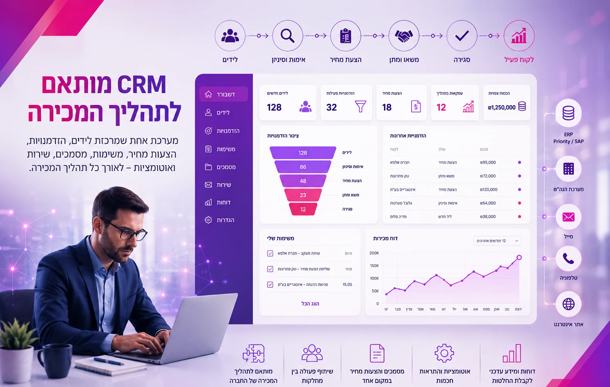
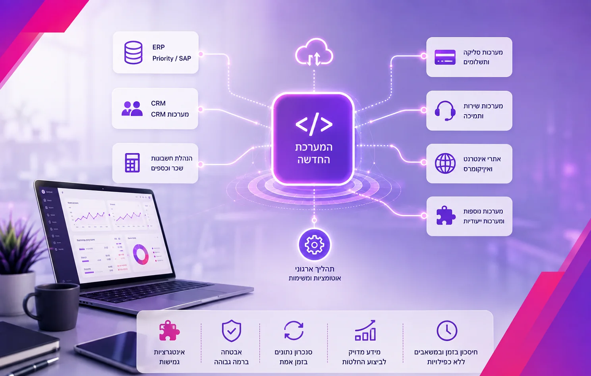
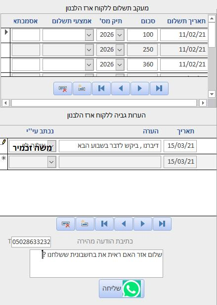

פיתוח תוכנה לחברות ולארגונים הוא בניית מערכת ייעודית סביב התהליך העסקי, במקום התאמת הארגון לתוכנת מדף. המערכת נבנית לפי אופן העבודה בפועל, מתחברת למערכות הקיימות (ERP, CRM, הנהלת חשבונות, סליקה) ומרכזת מידע, משימות והרשאות במקום אחד. באולסי מערכות אנחנו מספקים פתרונות תוכנה לעסקים מאז 1995, מאפיון ועד הטמעה וליווי.
ככל שחברה גדלה, גם התהליכים שמניעים אותה הופכים מורכבים יותר. מחלקת המכירות עובדת במערכת אחת, הנהלת החשבונות באחרת, התפעול מנהל קבצי Excel, עובדים מעבירים מידע במיילים ובוואטסאפ, ומנהלים נאלצים לחבר בעצמם נתונים ממספר מקורות כדי להבין מה באמת קורה בארגון.
בנקודה הזו הבעיה כבר אינה שחסרה עוד תוכנה. הבעיה היא שהתוכנות הקיימות לא עובדות לפי התהליך העסקי של החברה.
פיתוח תוכנה לחברות מאפשר להפוך תהליכים ייחודיים למערכת מסודרת, חכמה ומחוברת: מערכת שנבנית בהתאם לאופן שבו החברה באמת עובדת, מתחברת למערכות הקיימות ומאפשרת לנהל מידע, עובדים ותהליכים ביעילות.
באולסי מערכות אנחנו עוסקים בפיתוח תוכנה לעסקים, לחברות ולארגונים מאז 1995, החל מאפיון הצורך העסקי, דרך תכנון ופיתוח המערכת ועד אינטגרציות ו-API, בדיקות QA, הטמעה, הדרכה וליווי טכני שוטף.
מתי חברה צריכה תוכנה שמפותחת במיוחד עבורה?
לא כל חברה זקוקה למערכת ייעודית. כאשר קיים מוצר מדף שנותן מענה מלא לצורך, במחיר ובזמן סבירים, הוא בהחלט עשוי להיות הפתרון הנכון.
הצורך בפיתוח מתחיל בדרך כלל כאשר החברה מוצאת את עצמה מתאימה שוב ושוב את העבודה שלה למגבלות המערכות, ולא להפך.
הסימנים שחוזרים כמעט אצל כל לקוח
- מידע עסקי מפוזר בין כמה מערכות, קבצים ותיבות מייל.
- עובדים מבצעים פעולות ידניות שחוזרות על עצמן מדי יום.
- אותו נתון מוקלד יותר מפעם אחת, בשני מקומות שונים.
- מנהלים מתקשים לקבל תמונת מצב מלאה ועדכנית בלי לאסוף נתונים ידנית.
- קובץ Excel שהפך עם השנים למערכת המרכזית של המחלקה.
- מסד Access שרק עובד אחד בארגון יודע לתפעל.
- טבלה ידנית שתפקידה היחיד הוא לחבר בין שתי מערכות.
- תהליך שמחייב מעבר קבוע בין ERP, CRM, מייל ומסמכים.
במצבים כאלה, בניית תוכנה לעסק אינה רק פרויקט טכנולוגי. זו הזדמנות לבחון מחדש את התהליך כולו, לצמצם עבודה ידנית וליצור סביבת עבודה שמתאימה גם לצרכים הקיימים וגם לצמיחה העתידית.
פיתוח תוכנה לניהול עסקים: אילו מערכות אפשר לפתח?
היתרון המרכזי במערכות מותאמות אישית הוא שאין רשימה סגורה של פונקציות שהארגון חייב להתאים את עצמו אליה. המערכת נבנית סביב הצורך העסקי.
מערכות לניהול תהליכים פנים-ארגוניים
מערכת אחת שמרכזת משימות, תהליכי אישור, מסמכים, סטטוסים, אחריות של עובדים והרשאות לפי תפקיד.
אפשר, למשל, להעביר תהליך שמבוצע כיום באמצעות מיילים, טבלאות וקבצים לתהליך דיגיטלי שבו כל פעולה מתועדת, לכל משימה יש אחראי, והמערכת מתריעה כאשר נדרשת פעולה.
פיתוח תוכנה לניהול תיקי לקוחות ומערכות CRM

לא כל חברה מנהלת לקוחות באותה צורה. כאשר תהליך המכירה מורכב ממספר שלבים ייחודיים, דורש חיבור למחלקות נוספות או משלב מידע ממערכות אחרות, אפשר לפתח מערכת CRM מותאמת אישית לתהליך של החברה: מניהול לידים והצעות מחיר ועד משימות, מסמכים, שירות ואוטומציות.
תיק לקוח מרוכז אחד מחליף את הפיזור בין המייל, הטלפון והקבצים: כל שיחה, מסמך, הצעה, חיוב ופנייה יושבים על אותו כרטיס, עם היסטוריה מלאה והרשאות לפי תפקיד.
פיתוח תוכנה למפעל ותוכנה לניהול ייצור
בחברות יצרניות אפשר לפתח תוכנה לניהול תהליכי ייצור במפעל: הזמנות עבודה, מעקב אחר שלבי הייצור, סריקות, דיווחים מרצפת הייצור, בקרת סטטוסים, תקלות ומדדי ביצוע.
המטרה היא לחבר בין מה שקורה בשטח לבין המידע שהנהלת המפעל צריכה כדי לנהל את הפעילות: כמה הזמנות פתוחות, איפה נמצא כל מוצר בקו הייצור, מה תפוקת המשמרת ואיפה נוצר צוואר בקבוק.
מערכות מלאי, רכש ולוגיסטיקה
פיתוח מערכת לניהול מלאים הכוללת כניסות ויציאות, הזמנות מספקים, התראות מלאי נמוך, ברקודים, מעקב אחר פריטים ותהליכים לוגיסטיים ייחודיים.
כאשר קיימת מערכת ERP, המערכת החדשה יכולה במקרים המתאימים לעבוד לצידה ולהעביר אליה וממנה מידע באמצעות אינטגרציה, במקום להחליף אותה.
מערכות לניהול כספים ומעקב תשלומים
מערכות למעקב אחר חיובים, חובות, תשלומים, מסמכים, אישורים ותהליכים פיננסיים פנים-ארגוניים, בהתאם לצורת העבודה של החברה ובשילוב המערכות הפיננסיות הקיימות.
מערכות ואפליקציות לעובדי שטח
חברות שמפעילות טכנאים, מתקינים, אנשי מכירות, מפקחים או צוותי שירות בשטח זקוקות לעיתים למערכת שמחברת את השטח למשרד. פיתוח אפליקציה ייעודית מאפשר לצפות במשימות, לעדכן סטטוס, למלא טפסים, לצלם מסמכים ולדווח על ביצוע, כשהמידע עובר ישירות למערכת המרכזית.
פורטלים ללקוחות ולספקים
במקום לנהל חלק גדול מהתקשורת בטלפונים ובמיילים, אפשר להקים אזור אישי שבו לקוחות או ספקים מבצעים פעולות בעצמם: לצפות בסטטוס, להעלות מסמכים, לפתוח בקשות, לקבל מידע או לעקוב אחר הזמנות.
דשבורדים ומערכות מידע ניהוליות
כאשר הנתונים נמצאים בכמה מערכות, איסוף ועיבוד נתונים מאפשר לרכז את המידע הרלוונטי ולבנות עבור ההנהלה דשבורדים שמציגים נתונים ומדדים בצורה ברורה ועדכנית. במקום לאסוף בכל פעם נתונים ממספר מקורות, מקבלי ההחלטות מקבלים תמונה רחבה במקום אחד.

פיתוח תוכנה לארגון שכבר עובד עם מערכות קיימות
פיתוח מערכת חדשה לא אומר בהכרח שצריך להחליף את כל התשתית הטכנולוגית של החברה.
בארגונים רבים קיימות מערכות ERP, CRM, הנהלת חשבונות, סליקה, שירות ומערכות מקצועיות נוספות שכבר ממלאות את תפקידן היטב. במקרה כזה אפשר לפתח את הרכיב החסר ולחבר אותו לסביבה הקיימת.
באמצעות אינטגרציות ו-API אפשר, בהתאם ליכולות ההתממשקות של המערכות הרלוונטיות, להעביר נתונים בין המערכת החדשה לבין מערכות כמו Priority, SAP, מערכות CRM, שירותי סליקה, אתרי אינטרנט ומערכות נוספות.
המטרה היא לא ליצור עוד "אי" של מידע, אלא להפוך את המערכת החדשה לחלק מהתהליך הארגוני.
ומה אם חלק מהחברה עדיין עובד עם Excel או Access?
זו מציאות נפוצה יותר מכפי שנדמה.
מערכות רבות מתחילות כפתרון קטן: גיליון Excel לניהול הזמנות, קובץ Access לניהול לקוחות או כלי פנימי שעובד מצוין עבור מספר מצומצם של משתמשים. עם השנים העסק גדל, אבל הכלי נשאר. נוספים אליו עוד גיליונות, נוסחאות, טבלאות ומאקרו, עד שקובץ שהיה אמור להיות כלי עזר הופך בפועל למערכת קריטית לחברה.
במקרה כזה לא בהכרח צריך למחוק את כל מה שנבנה ולהתחיל מחדש. אולסי מערכות מתמחה גם בניתוח ובשדרוג של מערכות ותיקות: שדרוג מאקסל למערכת חכמה ושדרוג מאקסס לתוכנה חכמה, תוך בחינת הנתונים, התהליכים והלוגיקה העסקית שנצברו לאורך השנים והעברתם לסביבת Web מודרנית.
המטרה היא לשמר את הידע העסקי החשוב שכבר קיים, אבל להסיר את המגבלות של הטכנולוגיה הישנה.
תוכנת מדף או פיתוח תוכנה ייעודי לחברה?
זו אחת השאלות החשובות לפני שיוצאים לפרויקט. תוכנת מדף היא לעיתים הבחירה הנכונה כאשר הצורך סטנדרטי וקיימת מערכת בשוק שנותנת לו מענה טוב. היא מאפשרת להתחיל לעבוד במהירות יחסית, ועלות הכניסה בדרך כלל ברורה.
| פרמטר | תוכנת מדף | פיתוח ייעודי |
|---|---|---|
| התאמה לתהליך | הארגון מתאים את עצמו לתוכנה | התוכנה נבנית סביב התהליך הקיים |
| זמן התחלה | מהיר יחסית | נדרש אפיון לפני הפיתוח |
| עלות ראשונית | נמוכה וברורה מראש | גבוהה יותר, נגזרת מהאפיון |
| עלות לאורך זמן | מנוי חודשי לפי משתמשים, עולה עם הצמיחה | השקעה חד-פעמית עם תחזוקה שוטפת |
| אינטגרציות | מוגבלות למה שהיצרן מאפשר | לפי הצורך, מול המערכות הקיימות בארגון |
| הרשאות ולוגיקה | תבניות קבועות | נבנות לפי מבנה הארגון |
| בעלות על הקוד | אצל היצרן | אצל החברה |
| מתאים כאשר | הצורך סטנדרטי ונפוץ | התהליך ייחודי או דורש חיבורים מורכבים |
כאשר התהליך העסקי עצמו ייחודי, נדרשות אינטגרציות מורכבות, יש צורך בהרשאות או לוגיקה מיוחדת, או כאשר התאמת תוכנת המדף כבר מחייבת אינספור פתרונות עוקפים, כדאי לבחון פיתוח תוכנה בהתאמה אישית.
השאלה אינה רק "כמה עולה לפתח מערכת?", אלא גם כמה זמן וכסף עולים כיום התהליכים הידניים, הכפילויות, הטעויות והמגבלות של המערכת הקיימת. מערכת טובה לא אמורה לגרום לחברה לשנות תהליך יעיל רק מפני שכך תוכנת המדף תוכננה לעבוד.
שילוב AI בתוכנה ארגונית, כשיש לכך ערך עסקי
AI פותח אפשרויות חדשות בפיתוח מערכות לחברות, אבל לא כל מערכת ולא כל תהליך זקוקים לבינה מלאכותית. השאלה החשובה היא היכן הטכנולוגיה מייצרת ערך אמיתי.
בהתאם לסוג המערכת ולמידע הקיים, אפשר לשלב יכולות כמו:
- ניתוח כמויות גדולות של מידע ארגוני.
- סיווג אוטומטי של מסמכים ופניות.
- איתור חריגות ודפוסים בנתוני ייצור, מלאי או גבייה.
- חיפוש חכם בתוך המידע הארגוני.
- אוטומציה של פעולות שחוזרות על עצמן.
- הפקת תובנות ודוחות עבור עובדים ומנהלים.
הגישה שלנו היא להתחיל מהבעיה העסקית ורק אחר כך לבחור את הטכנולוגיה המתאימה, ולא להפך.
איך מתבצע פרויקט פיתוח תוכנה לחברה?
מערכת טובה מתחילה הרבה לפני כתיבת שורת הקוד הראשונה.

1. אפיון והבנת התהליך
אנחנו לומדים כיצד החברה עובדת כיום, מי המשתמשים במערכת, אילו פעולות הם מבצעים, היכן נמצאים הנתונים ומהן נקודות החיכוך בתהליך הקיים. המטרה היא להבין לא רק מה החברה מבקשת לפתח, אלא למה היא צריכה אותו.
2. תכנון המערכת
לאחר הגדרת הצרכים מתכננים את מבנה המערכת, בסיסי הנתונים, ההרשאות, ממשקי המשתמש, האינטגרציות והארכיטקטורה. כבר בשלב הזה חשוב להביא בחשבון אפשרויות לצמיחה ולהרחבה עתידית.
3. פיתוח ואינטגרציות
המערכת מפותחת בהתאם לאפיון ומחוברת למערכות אחרות בארגון כאשר הדבר נדרש. הפיתוח נעשה במטרה ליצור מערכת יציבה, נוחה לתחזוקה ומתאימה לסביבת העבודה של החברה.
4. בדיקות QA
לפני העלייה לאוויר מתבצעות בדיקות של הפונקציונליות, תרחישי השימוש, תקינות התהליכים והאינטגרציות. המטרה היא לזהות ולפתור תקלות לפני שהמערכת הופכת לכלי עבודה שוטף.
5. הטמעה והדרכה
גם מערכת מצוינת לא מספקת ערך אם העובדים לא יודעים לעבוד איתה. לכן תהליך המסירה כולל הטמעה והדרכה, בהתאם למבנה הארגון ולסוגי המשתמשים.
6. ליווי, תחזוקה והמשך פיתוח
חברות משתנות, וגם המערכות שלהן צריכות לדעת להשתנות. אפשר להוסיף בהמשך מודולים, תהליכים, משתמשים, אינטגרציות ויכולות חדשות בהתאם להתפתחות החברה, במסגרת ליווי טכני שוטף.
איך נראה פיתוח מערכת לחברה בפועל?
נניח שחברה מנהלת תהליך שבו הזמנה מתקבלת מאיש המכירות, מועברת במייל לתפעול, נתונים מוזנים ידנית ל-Excel, מחלקת הכספים צריכה לבדוק את מצב התשלום, ורק לאחר מכן העבודה עוברת לביצוע.
כל אחד מהשלבים יכול לעבוד, ועדיין התהליך כולו עלול להיות איטי ומועד לטעויות.
במערכת ייעודית אפשר להפוך את אותו תהליך לרצף אחד: ההזמנה נכנסת למערכת, הגורם הבא מקבל משימה, סטטוס התשלום מתעדכן, מסמכים נשמרים בכרטיס הרלוונטי, והנהלת החברה רואה בכל רגע היכן נמצא כל תהליך.
במקום שהעובדים יחברו בין המערכות, התוכנה מחברת ביניהן עבורם.
כך זה נראה אצל לקוחות אמיתיים: מערכת ניהול לחברת וילונות שהחליפה הזמנות באקסל ומדידות בוואטסאפ, מערכת CRM לעסקי שירות, ומערכת מעקב ציוד ותחזוקה לרשת מרפאות.
יש לכם תהליך שעדיין רץ על קבצים ומיילים?
נשמח לשמוע עליו ולבחון יחד אם פיתוח ייעודי הוא הפתרון הנכון.

למה חברות בוחרות באולסי מערכות?
מאז 1995 אולסי מערכות עוסקת בפיתוח מערכות תוכנה ופתרונות טכנולוגיים לחברות, לעסקים ולארגונים.
- שלושים שנה של פיתוח תוכנות לעסקים ולארגונים. תעשייה, פיננסים, יהלומים, קייטרינג, לוגיסטיקה, מרפאות, מסחר מקוון ועוד.
- מדברים עם מי שכותב את הקוד. בית תוכנה בוטיק, בלי שרשרת מתווכים בין הצורך העסקי לפיתוח.
- ניסיון מוכח מול מערכות ותיקות. Access, Excel, בסיסי נתונים ומערכות שנבנו לפני שנים.
- אינטגרציות למערכות הארגון. ERP, CRM, הנהלת חשבונות, סליקה ומערכות מקצועיות.
- בדיקות QA לפני כל מסירה, כולל גרסת בטא להתנסות לפני העלייה לאוויר.
- הקוד נשאר אצלכם. המערכת נבנית עבורכם ובבעלותכם, ואפשר להרחיב אותה בהמשך.
אנחנו מלווים את הפרויקט משלב האפיון ועד למסירה, כולל פיתוח, אינטגרציות, בדיקות QA, הטמעה וליווי. המטרה אינה רק למסור תוכנה שעובדת, אלא לבנות מערכת שעובדת עבור החברה.
שאלות נפוצות על פיתוח תוכנה לחברות ולארגונים
כמה עולה פיתוח תוכנה לחברה?
עלות הפיתוח תלויה בהיקף המערכת, במספר התהליכים והמשתמשים, במורכבות הלוגיקה העסקית ובאינטגרציות הנדרשות. לכן לפני מתן הערכת עלות חשוב להבין ולאפיין את הצורך. שיחת הייעוץ הראשונית והצעת המחיר הן ללא עלות וללא התחייבות.
כמה זמן לוקח לפתח מערכת לחברה?
משך הפרויקט משתנה בהתאם להיקף ולמורכבות. מערכת ממוקדת שונה משמעותית מפרויקט שכולל מספר מחלקות, בסיסי נתונים ואינטגרציות. אחרי שלב האפיון אתם מקבלים לוח זמנים עם אבני דרך ברורות, ובפרויקטים רבים אפשר לעלות לאוויר עם מודול ראשון ולהמשיך להרחיב משם.
האם חייבים להחליף את המערכות שכבר קיימות בחברה?
לא. במקרים רבים הפתרון הנכון הוא להשאיר את המערכות הקיימות שמבצעות את תפקידן היטב, לפתח את החלק החסר ולחבר ביניהן באמצעות אינטגרציה.
אפשר להפוך מערכת Excel או Access למערכת Web?
כן, וזו אחת ההתמחויות שלנו. בוחנים את המערכת הקיימת, את הנתונים ואת הלוגיקה העסקית, ומתכננים מעבר מסודר לסביבה מודרנית כדי לשמר מידע ותהליכים עסקיים חשובים.
אפשר לחבר את התוכנה ל-Priority, SAP או מערכות אחרות?
במקרים שבהם המערכת החיצונית מספקת אפשרויות התממשקות מתאימות, אפשר לפתח אינטגרציות להעברת מידע ולקבלתו באמצעות API או ממשקים אחרים.
האם המערכת והקוד יהיו בבעלות החברה?
כן. המערכת נבנית עבורכם ובבעלותכם. אתם לא כבולים אלינו, ותמיד אפשר להרחיב, לשנות ולהוסיף יכולות בהמשך הדרך.
אפשר להוסיף יכולות AI למערכת קיימת?
במקרים רבים כן, אבל קודם צריך לבחון את הצורך, את איכות וזמינות הנתונים ואת התהליך שבו רוצים להשתמש ב-AI. שילוב נכון אמור לפתור בעיה עסקית מוגדרת, ולא להתבצע רק משום שהטכנולוגיה זמינה.
אפשר להתחיל ממערכת קטנה ולהרחיב אותה בהמשך?
בהחלט. לעיתים נכון להתחיל בתהליך או במודול מרכזי, להטמיע אותו ורק אז להרחיב. תכנון ארכיטקטורה נכון מראש הוא מה שמאפשר את ההרחבות העתידיות.
מה קורה אחרי שהמערכת עולה לאוויר?
ההשקה היא תחילת הדרך ולא סופה. אנחנו נשארים לתמיכה שוטפת, תחזוקה, ושיפורים והרחבות לפי הצרכים החדשים שמתגלים תוך כדי עבודה.
צריכים תוכנה שתתאים לחברה, ולא חברה שתתאים לתוכנה?
אם תהליך מרכזי בחברה עדיין מנוהל באמצעות קבצים, פעולות ידניות או מספר מערכות שלא מדברות זו עם זו, ייתכן שהגיע הזמן לבחון פתרון אחר.
אולסי מערכות מפתחת מערכות תוכנה לחברות, לעסקים ולארגונים בהתאם לתהליכים, למשתמשים ולמערכות שכבר קיימים בארגון.
השאירו פרטים לחזרה, חייגו 09-8820511 או פנו אלינו בוואטסאפ, ונשמח לבחון יחד את הצורך ואת הדרך המתאימה לפתח עבורכם את הפתרון.